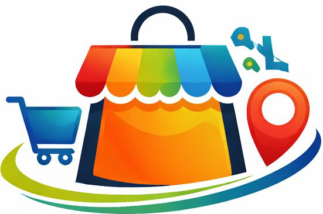

On White
On Background (header size)
On Dark

Favicon / App Icon
Logo renders at
82×40px
in the header (display size). Full-res PNG available at
assets/logo.png
. The logomark is a colorful market stall illustration with shopping cart, location pin, and Arabic wordmark.